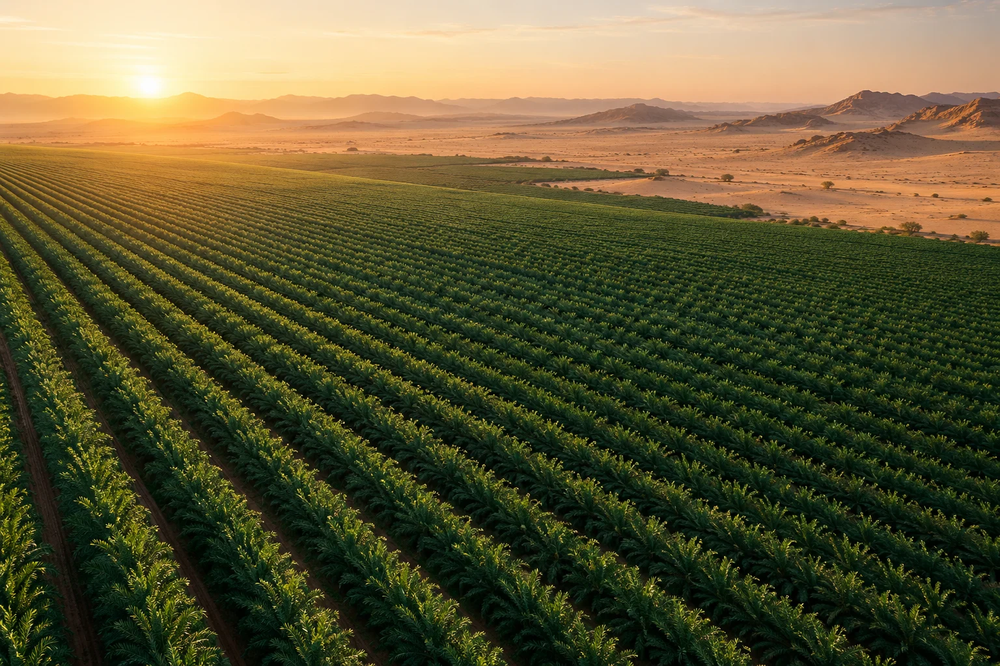
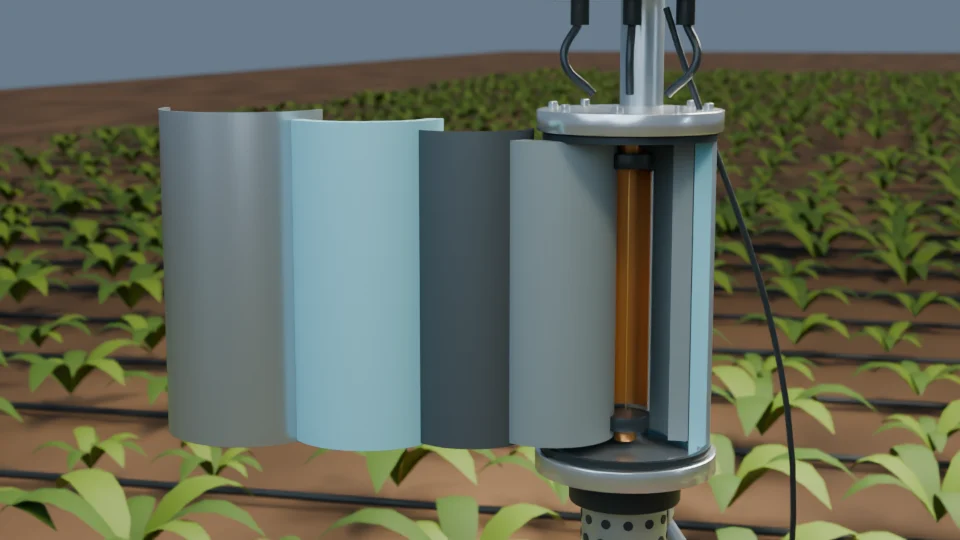

من الأرض، يبدأ التغيير
نفهم الأرض.
لنروي بذكاء.
من النيوترونات الكونية إلى قرار الري. نطوّر استشعارًا حقليًا لرطوبة التربة، محميًا من الحرارة، لزراعة تفهم احتياجها للماء.

سماكة عزل الأيروجيل
انخفاض الذروة الداخلية
من بيانات المحاكاة
علمٌ يمكن رؤيته.
ونتائج يمكن استكشافها.
01 / لماذا AeroCRNS؟
الحقل أكبر
من نقطة قياس.
تتغير رطوبة التربة من مكان لآخر. وقرار الري يحتاج صورةً أوسع، خصوصًا حين تجتمع ندرة الماء مع حرارة البيئة.
يجمع AeroCRNS بين استشعار النيوترونات الكونية، والعزل بالأيروجيل، ومعالجة القراءات داخل منصة بحثية واحدة. الهدف: ربط فهم التربة بقرار ري مدروس.
02 / من الإشارة إلى القرار
تقنية تقرأ الأرض.
وطبقات تحميها.

نموذج توضيحي من مشروع AeroCRNS01استشعار النيوترونات الكونية
+
يرصد كاشف البورون-10 النيوترونات المتأثرة بالهيدروجين في البيئة المحيطة. تُستخدم القراءة لتقدير متوسط رطوبة التربة على نطاق حقلي، بعد المعايرة والتصحيحات.
02حماية حرارية بالأيروجيل
+
غلاف من أيروجيل السيليكا الكاره للماء بسمك 20 مم يحدّ من انتقال الحرارة إلى الحساس. قورنت ذروة الحرارة الداخلية في نموذج المشروع مع الحالة غير المعزولة.
03تصحيحات بيئية وCTS
+
تُصحّح القراءات للضغط والرطوبة الجوية وشدة الأشعة الكونية، ثم يُختبر معامل CTS الحراري المقترح. يمكن تشغيله وإيقافه ومقارنة أثره في المنصة.
04من رطوبة التربة إلى قرار الري
+
تُقارن الرطوبة المصححة بعتبة محسوبة من خصائص التربة والمحصول. يصدر النموذج قرار فتح الصمام أو إغلاقه؛ ويمكن تتبّع كل خطوة في سجل المحاكاة.
03 / حين ترتفع الحرارة
حرارة أقل.
هامش حماية أكبر.
في المحاكاة الحرارية للمشروع، خفّض الأيروجيل ذروة الحرارة الداخلية من 53.8 إلى 42.7 درجة مئوية؛ تحت حد التشغيل المرجعي البالغ 45 درجة.
نتائج محاكاة المشروع؛ لا تمثل قياسات حقلية.
داخل نموذج المحاكاة
04 / جرّب العلم بنفسك
القراءة تتغيّر.
شاهد كيف يتغيّر القرار.
حرّك الوقت واستكشف بيانات النموذج. ثم افتح المنصة للتحكم في التصحيحات وخصائص التربة ومقارنة النتائج.
رطوبة التربة
بعد CTSمثال يعتمد متوسط 12 ساعة. لا يتحكم بصمام فعلي.
شاهد الفكرة تتحرّك
رحلة قطرة.
وقصة قرار.
جولة بصرية داخل الحساس: من حركة النيوترونات وطبقات الحماية، إلى معالجة القراءة وفتح صمام الري وإغلاقه.
شرح عربي بصري، بدون صوت. المشاهد توضيحية.أسئلة تستحق إجابة
العلم، بوضوح.
هل المنصة مرتبطة بحساس فعلي؟
النسخة الحالية بيئة محاكاة بحثية تعتمد 336 قراءة ساعية من ملف المشروع. لا تتصل بحساس ميداني أو صمام فعلي.
ما هو CTS؟ وهل تم التحقق منه ميدانيًا؟
CTS معامل تصحيح حراري بحثي مقترح مرتبط بدرجة حرارة التربة. تتيح المنصة دراسة أثره؛ ولا يزال يحتاج إلى تحقق ميداني مستقل.
هل عتبة الري ثابتة عند 0.125؟
لا. تُحسب العتبة من السعة الحقلية ونقطة الذبول ونسبة الاستنزاف المسموح. قيمة 0.125 م³/م³ تخص إعدادات المثال، ويمكن تغييرها داخل المنصة.
FROM SOIL TO DECISION